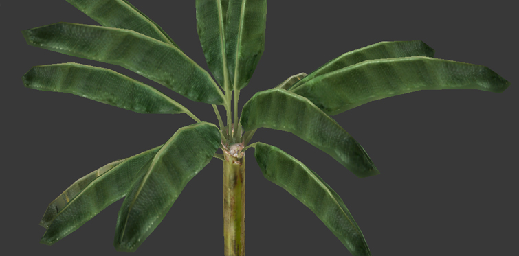
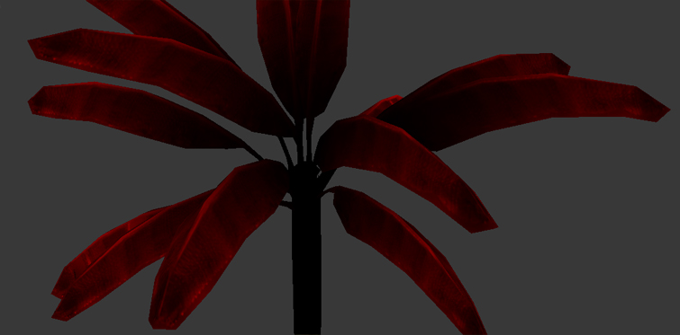
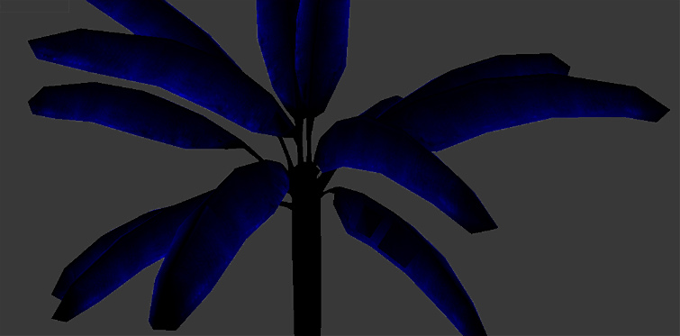
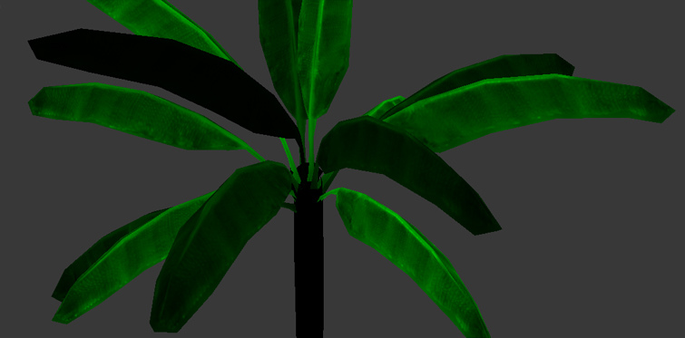
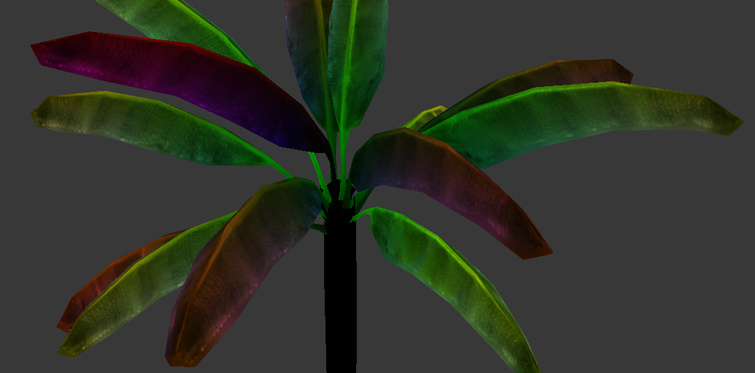
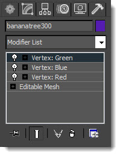
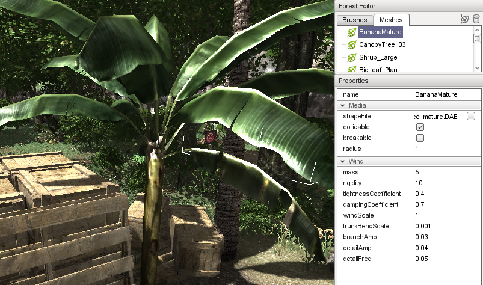

The color of a vertex in a model allows the artist to specify how a
plant model will behave once it is brought into Torque 3D. This also
covers how a plant will respond to a wind emitter. Here is a breakdown
of how the colors affect a model:
Bending of branches: controlled by the amount of red on a
vertex. Normally the ends of branches are fully red, and the spot where
they reach the trunk would be fully black (or colorless, depending on
how you are painting...see my method below), with a smooth gradation
between.
Branch group instancing: So that groups of branches sway
independently, they need to have varying amounts of green. Usually done
by selecting a clump of branches/fronds and filling with a random shade
of green (anywhere from pure green to black).
Flutter of leaves: flutter is controlled by the amount
of blue on a vertex. Normally, the ends of fronds are fully blue so they
flutter fully, but I've found that in a lot of cases (in trees, mostly)
I can just fill the entire frond with blue.
Vertical bend: the vertical bend of a tree does not have to be painted... that is calculated automatically by its height
Vertex Painting Your Model
The following images represent the tree model with the separate vertex coloring steps:
The tree without any vertex coloring:

The red coloring only, to designate the upward/downward bend of the
branches. Notice how the base of the branches are black and the ends of
the branches are red:

The blue coloring only, to designate leaf fluttering. Notice how only the edges of the blades are colored:

The green coloring only, to designate individual instances of branch bend. Each branch has its own shade of green:

Finally, all the colors mixed together with an additive blend. Notice
that the trunk has no coloring, since it will neither flutter like a
leaf nor wave like a branch. The bend along the tree's height is done
without the use of vertex coloring:

Here is a video of this in action:
How you actually apply these color sets varies between modeling apps. The following is an example from 3D Studio Max:
Stack three separate Vertex Paint modifiers on the tree model.
Working from the bottom, one modifier at a time, fill the
vertices with black, then paint one of the color sets listed above to
each of the three modifiers. In the end, it doesn't matter in what order
the colors are created or stacked.
After all three have been painted their own color set, set the blend mode of the top two Vertex Paint modifiers to "additive".
Export your model as COLLADA with these modifiers on and you
should have the vertex coloring you need to get wind effects on your
meshes. Do not collapse the stack.

If you need to go back and tweak individual color sets/modifiers in Max,
you can put their blending modes back to "normal" and turn them on and
off to isolate an individual color set. DO NOT eyeball the colors. Dial
them in. Red means pure red, or R:100%, G:0%, B: 0%.
Exporting Your Mesh
The DTS format does not support vertex color data, which means you
will need to export your models as COLLADA files. A commonly used
plug-in is OpenCOLLADA, which is a free exporter for 3D Studio Max.
Note: At the time this article was written, 3DS Max's
built-in COLLADA(.dae) exporter was not exporting vertex coloring
correctly. OpenCOLLADA exports both vertex coloring and User Properties
correctly. Just be aware that it appends material names with
"-material".
Setting Up A Mesh In Torque 3D

Once a mesh is brought into the Forest Editor (and a global wind
emitter is placed in the scene), the mesh parameters must be set
properly for your plant to come alive correctly. Definitions for mesh
parameters:
shapeFile - Path to mesh
collidable - Indicates whether or not the mesh uses collision
breakable - (not implemented)
radius - The canopy radius in meters. This keeps plants
from being placed too close to one another and having overlapping
canopies. This value may need to be adjusted on larger plants when
placing smaller plants under their canopy (placing bushes under a tree,
for instance). This has no in-game functionality and only matters when
placing trees in your environment.
mass - Mass will generally affect how springy a plant is
in response to wind or an explosion. Think of it as a weight on the end
of a stick. Most of my trees are set to around 5, smaller plants down to
0.5.
rigidity - How much the plant resists the wind force. Most of my trees are within 10-20, but some small grasses go down to 1.
tightnessCoefficient - How much the plant resists bending. Between 0 and 1.
dampingCoefficient - Slows down the sway of the plant so it won't whip back and forth forever. Between 0 and 1.
windScale - Relative scale at which this plant is affected by wind. Between 0 and 1, but will almost always be set around 1.
trunkBendScale - The amount that a plant will sway from
top to bottom. This is very sensitive. I don't have any vegetation set
higher than 0.03, and most are under 0.01.
branchAmp - Amount that a branch with sway up and down. Start well below 1.
detailAmp - The amount of leaf flutter. Start well below 1, in the 0.05 range.
detailFreq - The speed of leaf flutter. Start well below 1, in the 0.05 range.
It may seem like a lot of these appear to be doing the same thing, but
there are subtle differences. The numbers shown in the example images
are just starting places. Your plants may differ due to the way you've
colored their vertices or set the global wind emitter.
Setting the View Distance of Wind Effects
Plants in the distance will not display wind effects. This can be
changed by simply adjusting the variable assigned to this range:
$pref::windEffectRadius = 30. That sets it to 30 meters around the
camera. The default setting is 25 meters. Obviously this will affect
performance, but you can cater it to your specs. Make sure to save your
level after doing this.
Conclusion
This guide covered the basics of how Torque 3D utilizes vertex
painted objects. Artists are given a lot of control over forest editing.
Vertex painting is an extremely important step and should be considered
when developing your forest assets. In addition to the global wind
emitter, you can use a local wind emitter around anything that may
create a localized wind situation